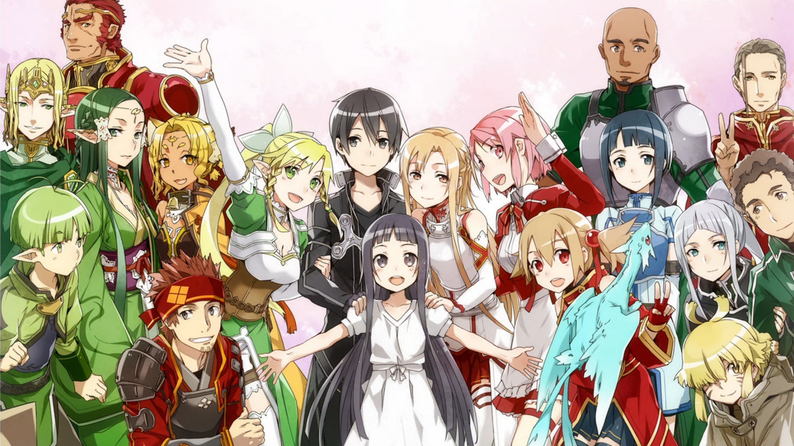

About Kazuto
Kazuto is a bad-ass swordsman! He is a high school student who enjoys playing FullDive VR games such as Sword Art Online (SAO), ALfheim Online(ALO), Gun Gale Online(GGO), Ordinal Scale and Project Alicization. He often ends up being a hero to a multitude of people in these games, often saving the real world lives of these players.
Kazuto and his friends
Kazuto's Characteristics
- He has black hair and black eyes
- He dual-wields swords
- He wears a black and silver cloak
- He was a beta tester for SAO
Kazuto's Friends and Family
Kazuto has several friends. Yuuki Asuna, or just Asuna, is his girlfriend. Tsuboi "Klein" Ryoutarou and Andrew Gilbert "Agil" Mills are his best friends. Click on the links below to read more about them: